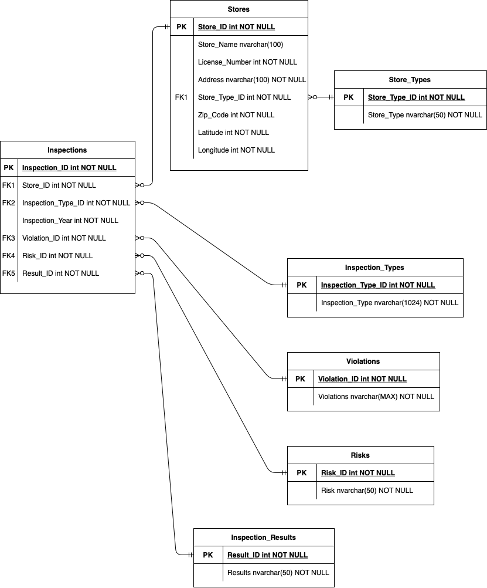

I've been working with relational databases for some time now, so I figured it was time to try creating a database myself (with an interactive Python application to match!)
When searching for suitable datasets to convert into database form, I stumbled across a dataset by the the City of Chicago. The dataset (originally in CSV format) contained information derived from inspections of restaurants and other food establishments in Chicago from January 1, 2010 to the present. Inspections were performed by staff from the Chicago Department of Public Health Protection Program using a standardized procedure. The results of the inspection are inputted into a dataset file, then reviewed and approved by a State of Illinois Licensed Environmental Health Practitioner (LEHP)
The uncleaned dataset had over 600,000 observations across 20+ variables. So, I downloaded the file in CSV format and cleaned it with Python (i.e., removing duplicates and null values as well as outliers). I then divided the dataset into seven CSV files, and used Microsoft Azure's Import Wizard commands to refine and upload the CSV files to the cloud into a new database (which I very creatively called Food Food-Inspections
Each cleaned CSV file represented a future table in the database. When using Azure's Import Wizard commands, I specified several Foreign and Primary key constraints within each table (forming relationships between them).
the database at a glance (entity relationship diagrams)
See the entity relationship diagram I created for the Food Inspections database below. You will see that, within the database itself, most tables have a one-to-many relationship with those adjascent to them.

the commands
The commands I implemented were labeled 0 through 9. They are as follows:
Command 0: Outputs information on the database itself (i.e., how many stores and inspections, where the data comes from, where you can learn more about the data source).
Command 1: Outputs the number of inspections and the number of food establishments in the database.
Command 2: Outputs the percent of inspections in the database by inspection result.
Command 3: Here, you input a store type (ex. Restaurant, Grocery Store, or Daycare) and the program outputs the store ID, name, zip code and number of inspections for stores in that type.
Command 4: Here, you input a store type (ex. Restaurant, Grocery Store, or Daycare) and the program outputs the store ID, name, zip code, and inspection results for stores in that type that failed inspection.
Command 5: Here, you input a store ID and the program outputs information on that store and its inspections.
Command 6: Here, you input a Chicago zip code, and the program outputs information on stores that failed inspection in that zip code.
Command 7: Here, you input a Chicago zip code, and the program outputs information on stores that passed inspection in that zip code.
Command 8: Here, you input a Chicago zip code, and the program outputs store types in that zip code (i.e. restaurants, grocery stores, hospitals, daycares) and what percentage of store types in that zip code passed inspection.
Command 9: Here, you input a store ID and the program outputs what percent of that stores inspections that store passed, failed, passed with conditions, etc.
Try out my project live in the window below! Note that you might have to click Run a few times for the database to connect. That's okay! I am using the free version of Microsoft Azure, so the database is not always running (pressing run a few times "wakes it up")